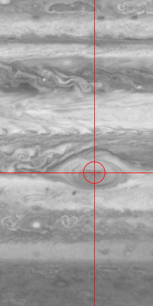
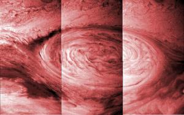
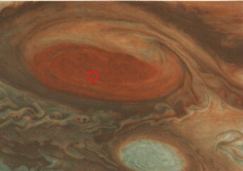

Unauthorized access is forbidden.
Great Red Spot on Jupiter.

Great Red Spot, Jupiter
Special Containment Procedures: Due to SCP-2399's location and nature, physical means of containment are currently impossible. Implanted Foundation agents in major observatories are to contain footage or images of SCP-2399. An ongoing misinformation campaign is in effect, which has thus far been able to completely suppress any knowledge pertaining to SCP-2399 from public awareness.
Foundation satellites in orbit around Jupiter are to maintain constant vigilance of SCP-2399's reconstruction efforts, and make all attempts to hinder that process should SCP-2399 reach a minimum of 75% completion. Additionally, a perimeter of long-range electromagnetic jamming satellites (BARRIER Array) has been situated in high-Jupiter orbit. Any transmissions intercepted by this array are to be summarily decoded and logged.
In the event of SCP-2399 surpassing 75% completion or an information breach in the jamming perimeter, necessary Foundation personnel will engage Protocol LEGIONNAIRE-5 (See Addendum 2399-L5), given its completion by that time.
Description: SCP-2399 is a massive, complex mechanical structure currently located in Jupiter's lower atmosphere. Since its visual discovery in 1963, SCP-2399 has been observed to use highly advanced, anti-matter-based weaponry to create spacial disruptions and devastating atmospheric [DATA EXPUNGED] observable as a large red vortex, commonly known as the Great Red Spot.

Time lapse photography of SCP-2399's travel path from ██/██/██ to ██/██/██.
SCP-2399 appears to be damaged, possibly due to an impact with the moon Io before coming to rest in its current position. SCP-2399 has been observed releasing a multitude of small, octopoid repair drones in efforts to repair the damage it has taken. Some of these drones will remain near SCP-2399, while others will patrol nearby moons, or deeper into the gasses of Jupiter itself, in search of parts that SCP-2399 is missing. Computer models estimate that SCP-2399 is at 59% completion, with a current rate of .78% annually. This rate has increased from an estimated .12% in 1970.
Despite its damaged state, SCP-2399 seems to possess a limitless power supply, advanced electromagnetic shielding, matter-disrupting weaponry, the ability to repair damage done to itself, and a precise tracking and targeting system (See Addendum 2399-2b). Due to the large difference in technological advancement between the creator of SCP-2399 and our own, for all intents and purposes, SCP-2399 is currently indestructible by human means. In theory SCP-2399 might be left vulnerable by a powerful enough electromagnetic pulse. Unfortunately, this technology does not yet exist.

SCP-2399 (circled in red) as visible from BARRIER Unit 21
Since 1971, SCP-2399 has been the recipient of an unending stream of electromagnetic-based communications originating in the Triangulum Galaxy, roughly 3 million light years from Earth. The means of SCP-2399's travel to our solar system, and the means of its communications, are all unknown. From 1971 to 1985, SCP-2399 continuously received a single encoded message which, through code-breaking and translation efforts, appeared to be a command to repair the damage it incurred upon entering our solar system. After this time, the BARRIER array was established to intercept these messages. This coincided with a period of radio silence from the origin of the communications, until 1996, when a different order began transmitting. The BARRIER array has thus far prevented SCP-2399 from receiving this command (See Addendum 2399-Comm-Log).
SCP-2399 Discovery Notes:
Addendum 2399-2b:
Addendum 2399-2c: Project Gigas:
Addendum 2399-L5:
Addendum 2399-Comm-Log: